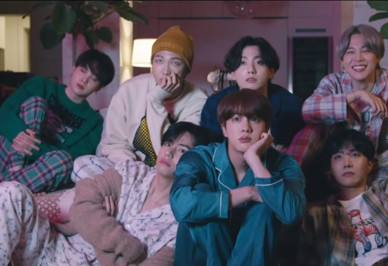

BTS Rilis Album BE dan Video Klip Life Goes On
Konten ini diproduksi oleh kumparan K-Pop 20 November 2020 14:57

Klik disini untuk melihat MV Klip nya
BTS akhirnya merilis album terbaru bertajuk BE. Tak hanya itu, RM cs juga melepas video klip untuk single Life Goes On
Lagu ini merupakan pembuka di album BE. Sebelum meluncurkan video klipnya hari ini, Jumat (20/11), grup K-Pop tersebut telah merilis teaser berupa video berdurasi 26 detik, yang diunggah di akun media sosial agensi Big Hit.
Ketujuh personel tampak tersenyum sembari merenung di depan api unggun. Mereka duduk dengan nyaman mengenakan piyama.
Dilansir Yonhap, Jungkook BTS terlibat dalam produksi video musik sebagai sutradara.
BTS akan menampilkan lagu Life Goes On di American Music Awards 2020 di Los Angeles.
Daftar Lagu di Album Terbaru BTS, BE
Album BE yang dirilis dalam format edisi deluxe ini menyampaikan pesan bahwa hidup harus tetap berjalan dalam keadaan normal baru.
Berikut delapan lagu di dalamnya.
1. Life Goes On
2. Fly To My Room
3. Blue & Grey
4. Skit
5. Telepathy
6. Dis-ease
7. Stay’
8.Dynamite
Belum lama ini, BTS mencatatkan sejarah dengan menjadi grup K-pop pertama yang debut di peringkat pertama Billboard Hot 100 melalui single Dynamite.